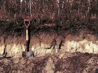
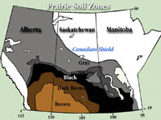
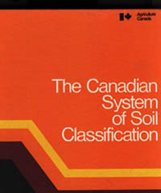

|
|
|
The modern classification of soils began with the Russian scientist Dokuchaev in the 1880s. Soil surveys in the US, Europe and Canada began
only a few years later. How do we classify soils? We could probably develop many classifications based upon how soils
Why Classify Soil? The most obvious reason is that if one person is studying a soil in one part of the world, are the research results communicated to workers in other parts of the world so that they can apply what has been learned? Classification allows us to communicate our ideas and research about soil and extrapolate them to other similar areas. It also allows us to predict the behavior of soils such as which soils are most subject to flooding or wind erosion? Or where does a city put its garbage dump? Or which soils will be most likely to have a sulfur deficiency?
|
|||
 It is important to think of soils in three dimensions; i.e. the soil has depth. Understanding the soil profile is essential to be able to classify soils. The formation of the layers or soil horizons is a result of the environmental forces that have acted upon the soil during its formation, often for thousands of years. The colour, texture and structure of each horizon and often its chemical characteristics are used to group soils and form the basis of most systems of soil classification. | |||
 The Soil Zones of the Canadian Prairies are not found in the Canadian Taxonomy of Soils but nevertheless the broad concept of a soil zone is valid. It enables us to think of soils as a product of the environment and make broad recommendations as to crop production and management. | |||
There are many ways to classify soils and there are several systems in use worldwide. Most notable is the U.S system of Soil Taxonomy or "7th approximation" (it underwent 7 "approximations" between 1951 and 1960 before being officially adopted in 1965). This system is used in many countries throughout the world but some countries -- Brazil, Canada, France, Russia -- have developed their own systems. Scientists often report the U.S equivalent classification in scientific reports and publications as well as the local classification, so that their work will have wider appeal. Regardless, all systems recognize the soil as a product of the environment and differ mainly in groupings and horizon definitions.  The Canadian Classification of soils organizes or groups soils into a hierarchy of five levels:
At the other end of the scale, the lowest member of the hierarchy, the soil series, would apply to small areas dispersed over fields.
|